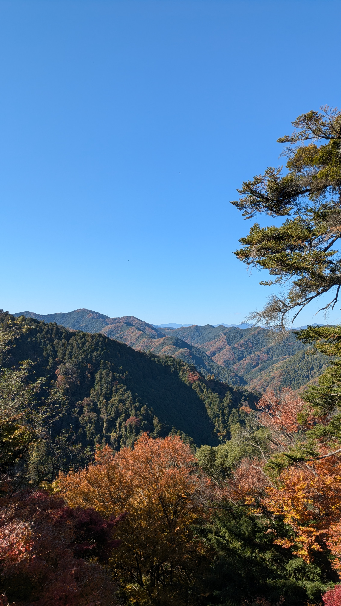

A beautiful walk in nature, a just train ride from Tokyo
Only an hour out from the hustle and bustle of the Tokyo metropolis, Mount Takao offers a stunning day out for the whole family.
Visit the mountain and enjoy stunning hikes through lush forests, food stalls offering traditional Japanese snacks, and take a load off while enjoying the view on the chair lift. If the beautiful views and amazing food aren't enough fun, Mount Takao even has a monkey park with a brewery nearby for some late afternoon relaxation before your return to the city!
What others are saying
Our word not enough for you? Check out what others have to say about their time at Mount Takao:
